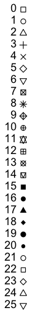

パレート図やZipfの法則の図示などで順位を横軸にとって度数を折れ線で表すが，これは折れ線グラフというよりは度数多角形（度数分布多角形）である。
以下ではRの標準のグラフの描き方を説明します。より新しい方法として ggplot2 を使う方法があります。
Windows上のRでグラフを描いてWord等に貼り付けるだけなら，あまり考えること（自由度）はありません。単純にグラフを描いて，マウスで大きさを調節し，「ファイル」→「クリップボードにコピー」→「メタファイル」でコピーして，Word等に貼り付けます。
グラフをPDFやEPSの形式で保存する場合は，単純に描いただけでは日本語部分が文字化けします。化けた場合は，いったんグラフの窓を閉じて，あらかじめ
> par(family="Japan1GothicBBB") # または Japan1Ryumin
と打ち込んでから，グラフを描くコマンドを打ち込みます（警告が出ますが無視します）。フォントは埋め込まれずGothicBBB-Mediumなどの名前参照だけになります（WindowsのAdobe Readerでは小塚ゴシックなどの代替フォントで表示されます）。
デフォルトのグラフ用窓のサイズは7インチ×7インチの正方形です。印刷用にたとえばA5横（210x148mm）のサイズにするには，「環境設定」→「Quartz」でサイズを幅8.267717インチ，高さ5.826772インチに設定するか，Rコンソールに次のように打ち込みます。
quartz(width=8.267717,height=5.826772)
他の文書に挿入する場合は，描いてからマウスで窓サイズを調節するほうが楽です。現在の窓サイズは
par("din")
で調べられますので，これを
quartz(width=...,height=...)
に与えれば，同じサイズが再現できます。
デフォルトのフォントは
par("family")
とすれば調べられます。最初は空文字列 ""
になっていますが，この状態では ArialMT (TrueType)
が使われるようです。これを例えば Helvetica (TrueType) にするには
par(family="Helvetica")
とします。ほかに Times
でも Palatino
でも使えます。Times
の場合，デフォルトの font=1
が Times-Roman，メインタイトルのデフォルト font=2
が Times-Bold，font=3
が Times-Italic，font=4
が Times-BoldItalic となります。
日本語のファミリーとしては "HiraKakuPro-W3"
などが使えます。画面で見るだけなら "Osaka"
のほうが軽いでしょう。
デフォルトのフォントは欧文にしておき，日本語を使いたいところはその都度
text() や mtext()
の中で family="HiraKakuPro-W3"
などを指定するという手もあります。
これでグラフの窓がアクティブになっているときに「ファイル」→「別名で保存」でPDF形式で保存できます。フォントは埋め込まれますので安心してLaTeX文書にも挿入できます。別の方法として，グラフの窓がアクティブになっているときに command + C し，「プレビュー」を立ち上げて「ファイル」→「クリップボードから新規作成」すれば，ベクトル形式で「プレビュー」に移せますので，「プレビュー」のメニューから好きな形式で保存できます。あるいは，ラスター画像でよければ， control + shift + command + 4 でマウスで選択し，「プレビュー」の「ファイル」→「クリップボードから新規作成」で「プレビュー」に移せます。Macではアンチエイリアスが効きますので，このままPNGで保存するだけでWeb用のきれいな図ができます。
以下はいろいろなグラフの描き方の例です。ついでに右図はプロット用の点の種類です。

Last modified: